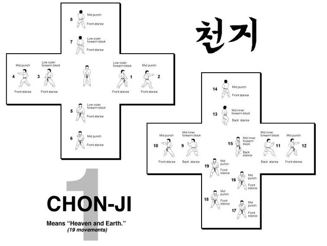
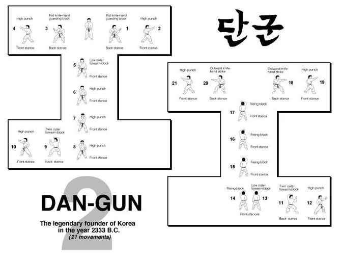

Tuls

Los tul son sucessiones de diversos movimientos fundamentales, la mayoria de los cuales representan tecnicas de ataque o defensa, establecidos en secuenciass fijas o logicas.
El estudiantetiene que hacer frente sistematicamente a varios adversarios imaginarios en condiciones diversas utilizando todos los mienmbros de taque o posiciones posibles y en cualquier direccion.La practica de los tuls permite a los estudiantes ver una gran serie de movimientos fundamentales, para desarrollar técnicas de salto, mejorar la flexibilidad de los movimientos, dominar los giros del cuerpo, endurecer los músculos y controlar la respiración,desarrollar actitudes diversas y flexibles y mejorar el ritmo de los movimientos También le permiten a los estudiantes adquirir ciertas técnicas especiales que solo se pueden dominar con esos ejercicios fundamentales o saltos.
resumen, un tul puede ser comparado con una unidad táctica o con una palabra si el movimiento fundamental sería el entrenamiento de un soldado solo o el alfabeto. El tul. pues, registrando cada movimienlo, es una serie de lucha, potencia, proezas y belleza caracterizada.
Aunque la lucha permite más o menos indicar el nivel del progreso del estudiante, los tuls, por su parte, son un barómetro más crítico de la evolución técnica del individuo.Es preciso se tenga en cuenta los puntos siguientes al realizar los tuls:
- El tul tiene que empezar y terminar exactamente en el mismo lugar. Eso indica la precisión del practicante.
- Se debe mantener una postura y enfremamiento correcto todo el tiempo.
- Poner los músculos en tensión o relajarse en cada caso según los movimientos en el momento crítico de cada movimiento.
- Se realiza el ejercido con un movimiento rítmico con ausencia de rigidez.
- El movimienlo se acelera o se aminora según las instrucciones de este libro.
- Cada tul tiene que ser dominado completamente antes de pasar al siguiente.
- El esludiante tiene que conocer el propósito de cada movimiento.
- Los movimientos tienen que ser efectuados con realismo.
- Tiene que distribuir de modo igualitario las técnicas de ataque o defensa entre los pies y mano s derecha e izquierda.
Tuls de Gups
1er Forma
Saju-Jirugi

2da Forma
Saju-Makgi

3da Forma
Chon-Ji
4da Forma
Dan-Gun
5ra Forma
Do-San
6ta Forma
Whon-Hyo
7ta Forma
Yul-Gok
8ma Forma
Joong-Gun
9na Forma
Toi-Gae
10ma Forma
Hwa-rang
11va Forma
Choong-Moo
Torneos de Tuls

Se basan en unas primeras rondas donde pasan primero 3 participantes, realizan su forma(de la cual solo puede hacer su forma y la forma anterior excepto amarillo y rojo)